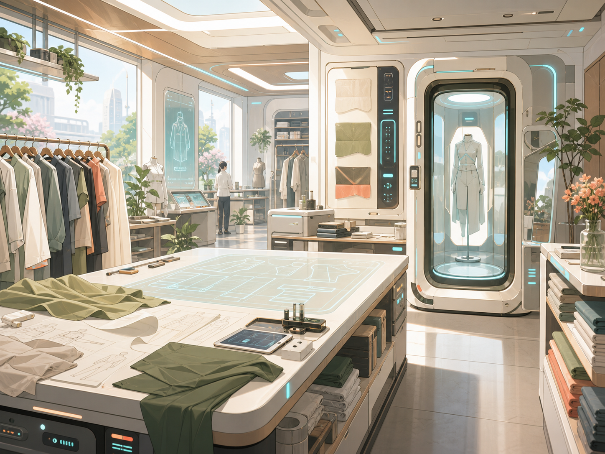
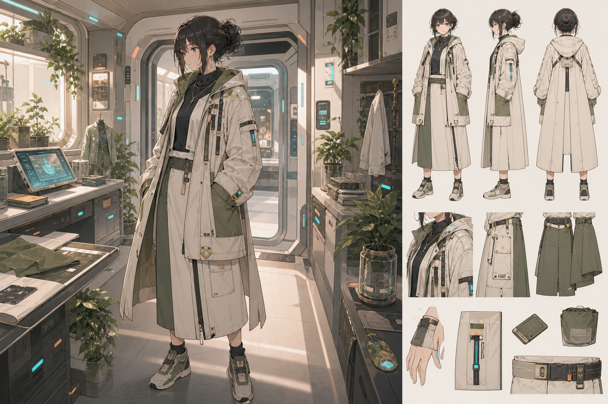

材料优先
能用织物结构、支撑线和版型记忆解决的，不调用接口。
栖线的低功率灵械服饰能感知体温、姿态、局部压力、湿度和常见接口状态。它不读取灵核参数，不把身体反馈上传给商业推荐系统。

能用织物结构、支撑线和版型记忆解决的，不调用接口。
保温、防尘、局部压力反馈和姿态承托默认停留在低功率窗口。
医疗恢复期、职业灵械或未成年人服饰的凭证调用会单独列出。
耳、尾、角质层、鳍状结构、晶化皮肤和恢复期绑带可选避让方案。
接口通勤款标记散热区、窗口位和断连拉片，避免衣物压住设备。
接口复检只记录用户主动登记的服饰项目，可本地保存或另行转交。
不是战服，也不是高危职业套件。它们面向上班、上学、旅行、驻站、演出、会议、护理、约会，以及临时被延误在星港过夜的日子。
面向星港、轨道电梯、短途跃迁航班和跨城通勤。衣物内层有低压差缓冲结构，适合长时间坐席、安检排队和轻微重力切换。
把栖线服饰放回星港、驻站门店、礼仪接待和试衣舱里看。鼠标悬停可查看局部动态放大。

门店不会要求完整身体履历。你可以跳过任何非必要项目，只购买普通版型。
试衣舱先完成外部尺寸扫描，识别衣长、肩线、支撑点和避让区。
选择接口适配时，系统只提示本次需要调用的凭证和授权范围。
交付前完成坐下、转身、抬手、快走、背包和接口断连测试。
衣物没有通过测试，门店会改版，或明确告知它不适合当前场景。
我们更希望一件衣服被维护十次，而不是被你因为一次接口压迫丢掉。
清洁、补线、材料回弹、扣件替换。适合普通通勤款和礼仪款。
温控层、姿态支撑、版型记忆和局部压力反馈的低功率复核。
仅限用户主动登记的民用接口服饰，复检后生成本地维护记录。
如果一件衣服看起来像职业套件，但实际上没有训练、维护和断连设计，它就不应该被做成日常商品。